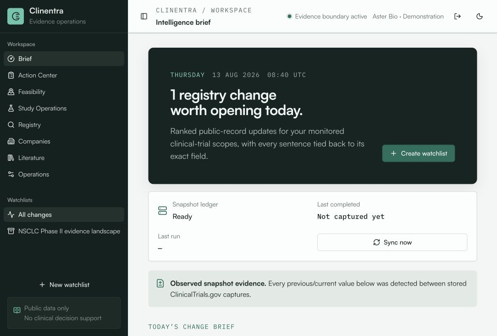

01 / Clinical intelligence
ClinEntra
An evidence-first workspace that detects field-level changes in public clinical-trial records and carries the source into human-reviewed operational decisions.
- Tenant-scoped action, feasibility, and study-operations workflows
- Deterministic verification for isolation, backups, delivery, monitoring, and secret hygiene
- Bounded pilot—not clinical decision support or outcome prediction
